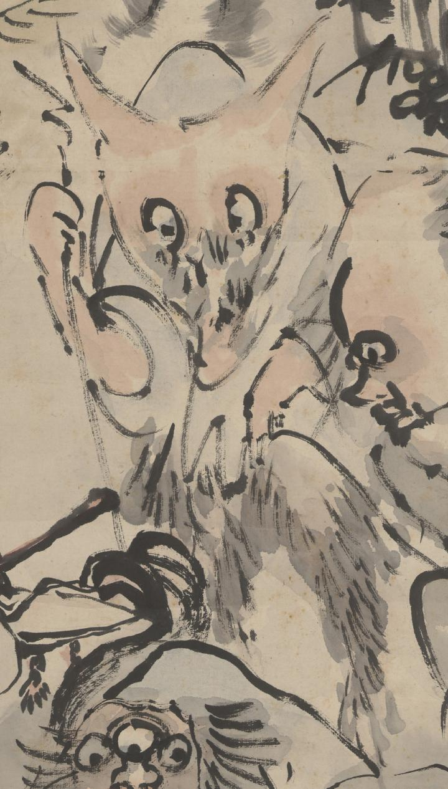

獣のような顔つきの化物。狐のような耳が頭頂から生えている。目玉は大きく、口元にひげが生えているように見える。脚には獣のように毛が生えている。片手で杖をつき、かがんで歩いている。
著作者：高井鴻山／出典：親書誌：U426_nichibunken_0099：群妖図；グンヨウズ／日付：2006／資源識別子：U426_nichibunken_0099_0014_0000
Copyright (c)2010- International Research Center for Japanese Studies, Kyoto, Japan. All rights reserved.